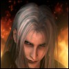
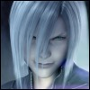

| Two years after the Planet's jeopardy by Sephiroth, Cloud lives separate and alone from most of the world, acting as a delivery man for his own Postal Company: Strife Delivery Service. Strife Delivery Service works with Tifa's 7th Heaven in caring for orphaned children inflicted with Geostigma Syndrome, a decease caused by Jenova's cells in the Lifestream that can result in severe pain or death. When the Planet is threatened again, Cloud finds himself carrying around the mistakes of his past, believing in his incapability of protecting anyone. Cloud's emotional wounds allow him to be faint of heart, oppressed by the memories lost. Seeking forgiveness, he fights for the chance of redemption. With the life of the Planet at stake, Cloud fights on, battling his sins, to save others. Cloud also struggles with his physical condition, being inflicted with Geostigma as well, which bring about painful memories of his past. |
|  | Sephiroth still haunts Cloud's past. Cloud's Geostigma causes him to have flashbacks of Sephiroth's destruction of Nibelheim. When Kadaj transforms into Sephiroth, Sephiroth tells Cloud that he will use the thoughts of those who died from Geostigma to eat away at the Planet, and then use the Planet to travel the darkness of the universe. |
| Still working at 7th Heaven, Tifa now helps orphaned children suffering from Geostigma, and works alongside Cloud's Company: Strife Delivery Service. Tifa has not changed much, still showing ultimate concern for Cloud, especially now with his Geostigma and his emotional scars from his past. Tifa has a big part in encouraging and convincing Cloud to fight on, even if he believes he is not able to help anyone, to still try and not loose to the memories made. |
| Aeris' death still torments Cloud for allowing her to die without him helping at all. Aeris comes to him in a vision at the Ancient City, and Cloud tells her that he wants to be forgiven, yet Aeris has never once held a grudge against Cloud. Throughout Advent Children, Aeris is there in spirit to help Cloud through his struggles and trials, and to help Cloud free himself of his sins. |
| When the world was threatened again by the Silver Haired Brothers, Vincent has been keeping an eye on Kadaj and his calamitous plans. Because of this, Vincent has learned of Kadaj's intentions of restarting the Reunion and destroying the Planet. Vincent had also rescued two of Shin-Ra's Turks, Tseng and Elena, who were on the verge of dying by the Silver Haired Brothers, which allowed him to learn that the Shin-Ra Company had obtained a part of Jenova's body. Vincent returns to Midgar to fight alongside Cloud once again to help save the Planet from annihilation |
| Since the use of Mako Energy has been rejected, Barret has set out to find a new source of power, leaving Marlene under Tifa's care. Barret's search had led him to find a large oilfield. Barret returns back to Midgar to help Cloud once more in defeating the threatening evil against the world. Barret still fights with a mechanical right arm which transforms into a gun |
| After Final Fantasy VII, Yuffie went back to Wutai, her hometown. Leading up to the events of Advent Children, all the children at Wutai were missing. Yuffie came to Midgar to get some answers from Cloud and to fight again. Yuffie is her lively, animated self, still holding on to her obsession with materia. It seems Yuffie also has never gotten rid of that motion sickness yet |
| During the past two years, Cid's love for the skies has not been tainted. Cid has created a new model aircraft: Sierra. Cid and his new aircraft take everyone who fought with Cloud two years ago back to Midgar to accompany Cloud in his new struggle. Cid's spirited heart and bad attitude have not changed at all during the past two years. |
| Red XIII makes an appearance back at Midgar again to help Cloud fight against Bahamut and the evil reborn. Not much is said about Red XIII during the movie. He is normally quiet and calm, and now has Cait Sith riding on his back. Red XIII makes an appearance in the beginning of the movie, showing him and his pups 500 years after Final Fantasy VII. This scene is also shown in Final Fantasy VII at the very end of the game. |
| After the attacks of Diamond Weapon came crashing through the President's window two years ago, Rufus was somehow able to escape the collision. Rufus' escape was to be explained, but the uninterested Cloud interrupted, unwilling to hear what the President had to say. Rufus ends up being the wheel-chaired man, covering himself to hide his Geostigma stricken body. Rufus believes that Shin-Ra has a big debt to pay for allowing the madness of Sephiroth to almost destroy the world. With the interference at the Northern Crater, causing Kadaj, Yazoo, and Loz to be born, Rufus is determined to rid of them before they destroy what Shin-Ra wants to rebuild. |
| After Shin-Ra's downfall, Reno is still devoted to the Company and works with his partner, Rude. Reno was part of the investigation of the Northern Crater when the interference happened. When Kadaj, Yazoo, and Loz were formed, Reno turned to Cloud, giving Strife Delivery Service a call, saying that he had a job request. Reno is in opposition to the Silver Haired Brothers and battles them on the streets of Midgar. Reno still sports his Shin-Ra Turk suit, and never lets go of his tazer. |
|  | The incidents of Sephiroth two years ago have led the Shin-Ra Company to investigate the aftereffects left behind at the Northern Crater. The Northern Crater was void, leaving nothing behind; however, an interference happened, causing Sephiroth's thoughts to merge into three living bodies. The three Silver Haired Brothers: Kadaj, Yazoo, And Loz, were created. This explains the similarities of their appearance to Sephiroth. Kadaj, leader of the Silver Haired Brothers, is driven to find Jenova, and to restart the Reunion in order to take revenge against the Planet. Kadaj's deranged intent causes him to do whatever it will take to find Jenova and destroy the Planet. The Three Silver Haired Brothers fight in opposition against Shin-Ra and Cloud, and anyone else who will stand against them. |